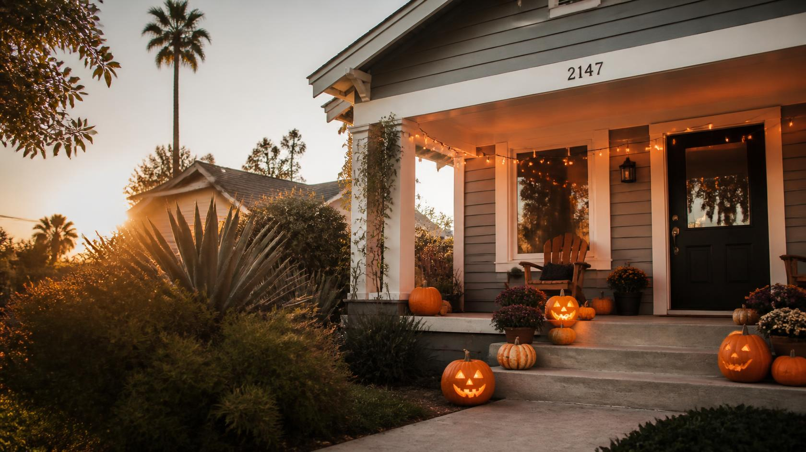
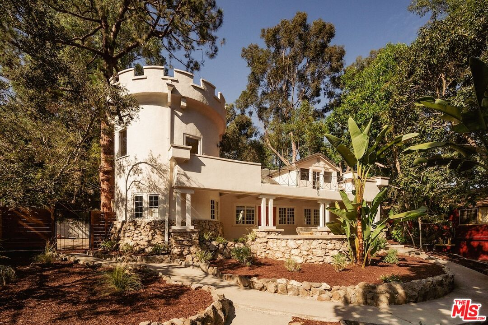
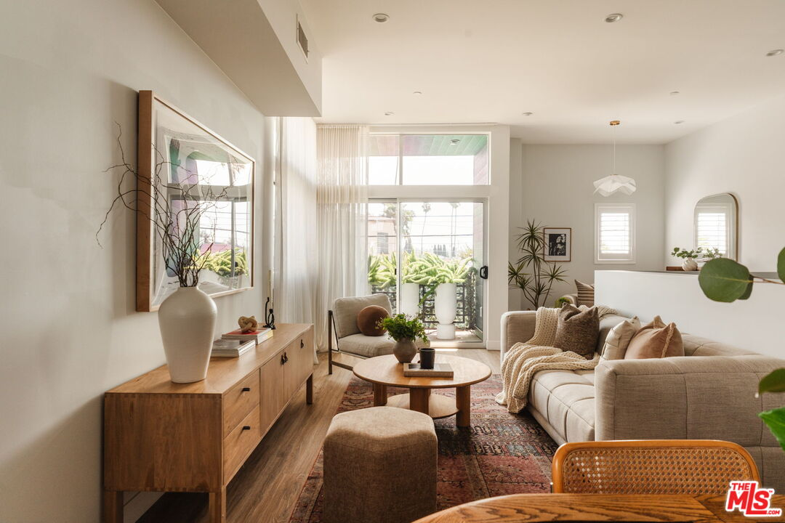
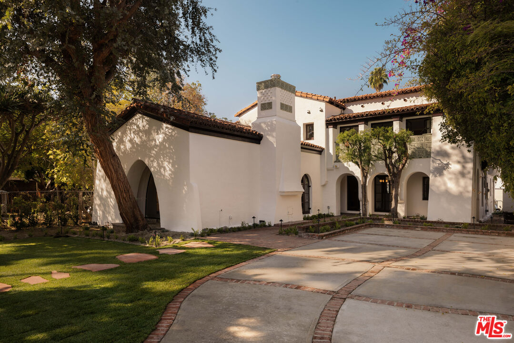

I guess the Yoga stuck

Every deal I work looks pretty much the same from the outside, paperwork, showings, negotiating, closing. What people don’t see is that almost everyone I sit across from is in the middle of something, a new chapter starting or an old one ending, it’s rarely just about the house.
I had a moment recently that reminded me of that harder than usual. I was meeting a client going through something genuinely difficult, and within a few minutes of being in the room I could feel exactly how much weight they were carrying, before they’d said a word about it. And I wasn’t expecting to deal with any of that on a random weekend appointment, but there I was.
I still do yoga and Reiki, it’s just part of how I take care of myself. As a side note I’ve always picked up on people’s feelings more easily than I’d like and I never really thought that was something I’d bring into this job. But sitting in that room, I couldn’t really keep the two separate, and it made me think maybe I need to actually start using that practice here too. I made it through and I did what I always do after something that though, got back in the car, turned the music up too loud, and sang at the top of my lungs to who’s know what 90’s jam and ate lunch like a raccoon on my way to the next showing. This is also self care :)
Winter is coming
Winter is coming and I’ve been waiting my whole life for a legitimate reason to say that. El Niño is shaping up to be one of the strongest we’ve seen in decades, but no worries! I put together a real prep checklist, gutters, insurance, the stuff that’s easy to forget until it’s raining to help navigate weather and hopefully answer any questions.
Did you know?
- Bathroom lighting is the most underrated detail in a home, and also the most likely to ruin someone’s day without them knowing why. Light from above just casts shadows in all the wrong places, but light coming from the mirror itself is the difference between a room that feels good and one that doesn’t. If a buyer walks out of your powder room looking worse than when they walked in, that’s not nothing.
- Homes with “barn doors” mentioned in the listing description sold for about 13% above expected value and nearly 60 days faster, per Zillow’s own data. “Shaker cabinets” worked almost as well, a 9.6% premium and 45 days faster. It’s not really about the barn door, it’s what having one signals about the rest of the house. Personally not a fan of barn doors ESPECIALLY in bathroom, like why?
- The same year NASA first showed off the Enterprise space shuttle, in Palmdale of all places, there were only about 158 satellites orbiting Earth. Today there are somewhere around 16,000 to 18,000 active ones, and more than 31,000 tracked objects up there total. Crazy.
- In Italy, a home’s kitchen is legally considered furniture, not a fixture. When someone moves out, they can take the cabinets, countertops, and appliances right along with them. This is so fascinating to me, and if there’s anyone reading who knows more about this or maybe has lived in Italy, let me know.
What’s happening in LA?
- Sherman Oaks Street Fair. This one’s a Valley institution at this point. Ventura Blvd shuts down for the day, there’s live music and food trucks and way more vendor booths than you can actually get through, and somehow it still feels like a real neighborhood thing 34 years in. Sunday, October 18, free, no ticket needed.
- Yama Sushi Marketplace. Sushi Row on Ventura just leveled up. Yama Sushi Marketplace opened a few doors down, and this isn’t a grocery-store situation, the guy behind it has been one of LA’s biggest fish buyers for over 40 years. Grab-and-go sashimi that actually tastes like it, plus the biggest sake selection I’ve seen outside an actual bar. Adding this to my rotation.
- Sous Sous at Hotel Lucile. I have such a soft spot for this one before even trying it. Someone spent years turning a 95-year-old Silver Lake church into a boutique hotel, and the restaurant sits right in the old chapel, stained glass and all. French and Southern cooking in a room that used to hold Sunday service. I’m dying to see it in person.
Featured listings




- Hollywood Hills East — 2351 Canyon Dr. 4 BD · 3 BA · 2,142 SF · $2,599,000. Featured in Architectural Digest and reimagined by designer Carlos Mota, this 1930s Spanish home in The Oaks holds 4 bedrooms and 3 baths, all the character still intact. The living room climbs into soaring ceilings and a Juliet balcony you actually want to stand on, while the dining room wears hand-painted wallpaper like it’s always belonged there. The kitchen leads through a run of arches into a breakfast nook, tile work and stainless appliances doing the talking. Upstairs, the primary suite opens through French doors to a bath built around a freestanding soaking tub, Mota’s layered color and pattern running through every room without covering up what’s original. Out back, a private yard for actually living in it, plus a bonus space ready for a guest room, an office, a gym, whatever this chapter needs.
- Laurel Canyon — 8337 Lookout Mountain Ave. 5 BD · 4 BA · 3,401 SF · $1,799,000. Live out your fairytale dreams in this enchanting 1908 castle-style residence that offers a rare connection to the neighborhood’s bohemian roots. Long before Laurel Canyon became the epicenter of the 1960s music scene, these wooded hills attracted Hollywood’s earliest stars, artists and creative outsiders seeking privacy and escape. Silent-film icon Clara Bow, the original “It Girl,” was among those drawn to the canyon, famously retreating to a castle-like hideaway with her beloved puppy. Built in 1908, this distinctive four-bedroom residence captures that same romantic, unconventional spirit. Originally conceived as a hunting cabin, the home unfolds with storybook details including two turret rooms and an intriguing bridge overlooking the main living space.
- Mid-City — 1434 1/2 S Sycamore Ave. 3 BD · 4 BA · 1,903 SF · $1,297,000. Set in the heart of Mid-City, this 3-bedroom, 4-bath home by architect Jay Vanos does something most houses don’t even attempt: it turns 360 degrees into a single view, the Observatory and downtown skyline on one side, the Pacific catching the light on the other. Floor-to-ceiling windows carry that view straight into an open-concept living space built for real life, not just photos, with a private balcony just off the main room. The kitchen is the kind you actually cook in, quartz counters, custom cabinetry, appliances that mean business. The primary suite has a walk-in closet done properly, and two more bedrooms give the house room to breathe.
- Hollywood — 1641 N Ogden Dr. 5 BD · 5 BA · 3,828 SF · $3,395,000. This is 1641 N Ogden, in Sunset Square, one of LA’s best-preserved 1920s neighborhoods. This Spanish Revival still has all its original character: Saltillo tile, arched doorways, the original hardwood floors, and a clay tile roof. It’s been carefully restored, and most of the major systems are updated. There are five bedrooms and four and a half baths, including a guest suite on the first floor. The kitchen is the heart of the house, and French doors open right out to the pool.